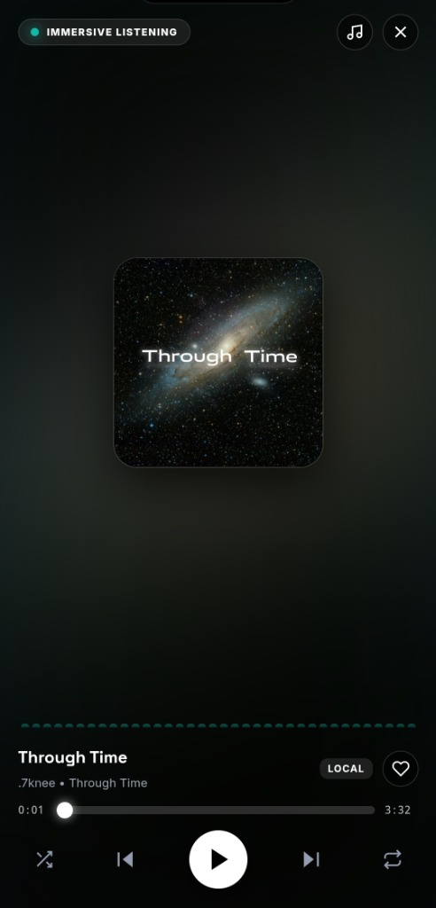
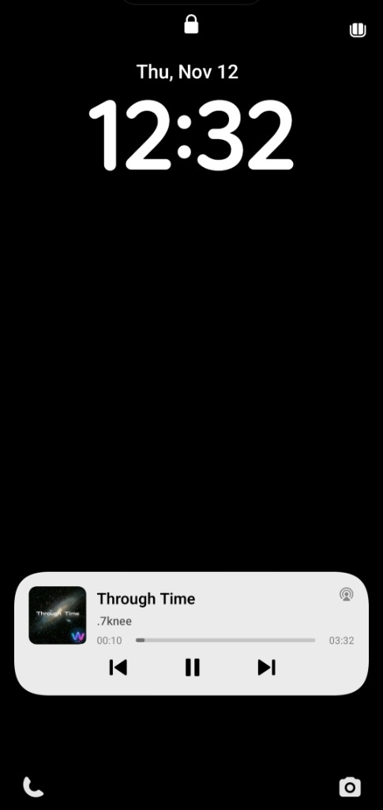

Music, Without Boundaries.
Your music collection deserves a better experience. Play your favourite tracks, explore your library and enjoy music your way — all from your device.
Made for your music. Designed for you.

Every Track Has Its Place.
Crafted around your local files — switch cleanly between Immersive Now Playing and Lock Screen Notification controls.
Immersive Listening in full focus.
Built around distraction-free playback with ambient artwork glow, live audio wave indicators, synchronized LRC lyrics access, and crisp one-handed transport controls.
- View ModeImmersive Listening & Now Playing
- Audio SupportLocal MP3, FLAC, WAV, M4A, AAC, OGG, OPUS
- ExtrasLive visualizer bars & synchronized lyrics

Everything You Need. Nothing You Don't.
Built directly around Android foreground playback and local storage so your personal library responds effortlessly without accounts, tracking, or clutter.
Release Scope
Access and organize audio stored directly on your device. Browse songs, artists, albums, personal playlists, and favourites straight from your Android storage folders without uploading anything.
Enjoy an artwork-driven listening screen with ambient background lighting, live soundwave visualizer bars, synchronized LRC lyrics view, and a distraction-free Immersive Listening mode.
Plays local MP3, FLAC, WAV, M4A, AAC, OGG, and OPUS files with accurate scrubbing, queue reordering, shuffle and repeat modes, and instant transitions between tracks.
Yes. Music continues playing uninterrupted while you switch apps or lock your screen, backed by WAVEN's persistent Android foreground playback service.
Play, pause, seek, and skip tracks directly from your Android lock screen and active media notifications via native MediaSession integration.
Play, pause, and skip tracks using supported Bluetooth headphones and hardware media keys, with automatic pause protection whenever your audio device disconnects.
Never. WAVEN works offline with the music stored on your Android device — zero subscriptions or accounts needed. Optional online music streaming remains planned for later updates.
Your Music. Your Space.
WAVEN is built around a simple idea: your music should belong to you. Enjoy the tracks you already have, with an interface designed to make every listening moment feel special.
Your Music. Your Device. Your WAVEN.Your Music Journey Starts Here.
Bring your music collection to life with WAVEN.